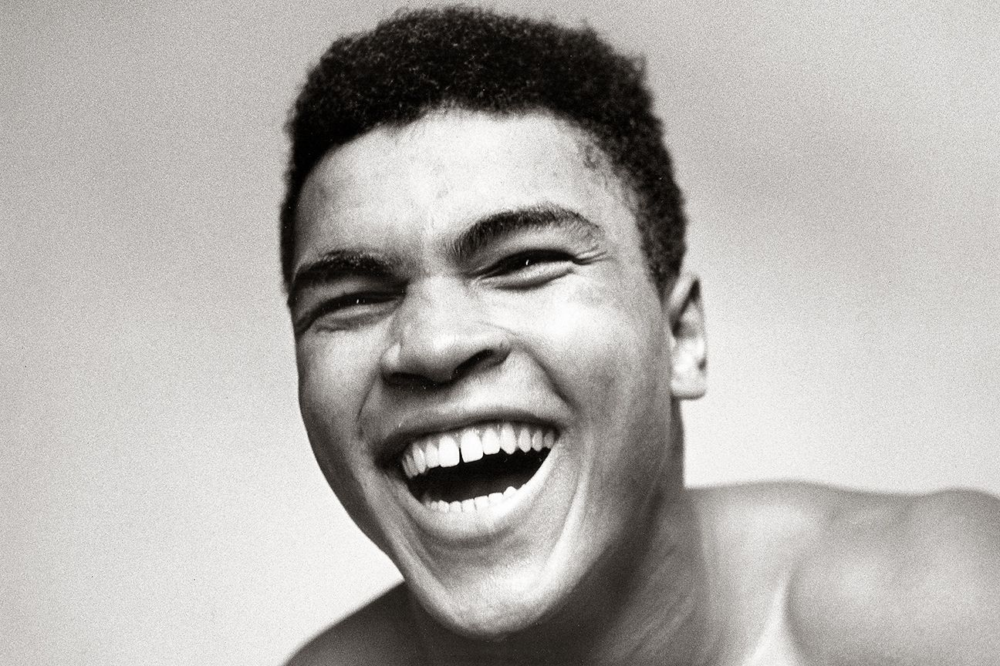

Muhammad Ali
A man who upheld his values

Muhammad Ali
A Time line of his life
- 1942 - Born in Louisville, Kentucky as Cassius Clay
- 1954 - A twelve year old Clay becomes interested in boxing after having his bicycle stolen by a theif
- 1960 - Clay wins the Light Heavyweight Gold Medal in the Rome 1960 summer Olympics
- 1964 - Clay joins the Nation of Islam, and changes his name to Muhammad Ali
- 1967 - Muhammad Ali refuses induction into the US Army
- 1971 - "The Fight of the Century" Joe Frazier vs Muhammad Ali
- 1971 - Supreme Court reverses conviction of Muhammad Ali by unanimous decision
- 1974 - Muhammad Ali vs George Foreman Battle in the "Rumble in the Jungle"
- 1975 - Muhammad Ali converts to Sunni Islam
- 1979 - Muhammad Ali announces retirement
- 1984 - Muhammad Ali is diagnosed with Parkinson's Syndrome
- 2005 - George W. Bush awards Muhammad Ali the Presidential Medal of Freedom
- 2016 - Muhammad Ali passes away at the age of 74
"He was Muhammad Ali, a whole greater than the sum of its parts.
He was bigger, brighter, more original and influential than just about anyone of his era."
- President Barack Obama
To learn more about this incredible human being, visit his Wikipedia Entry